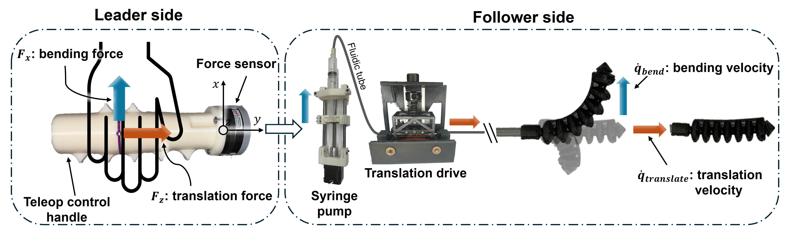
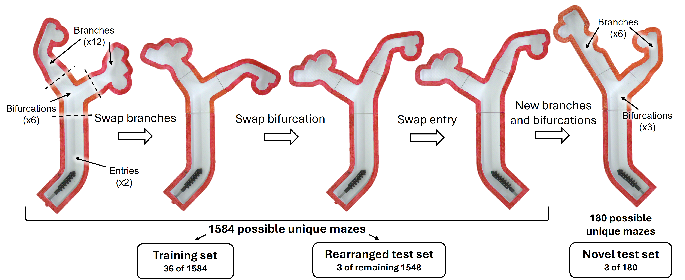
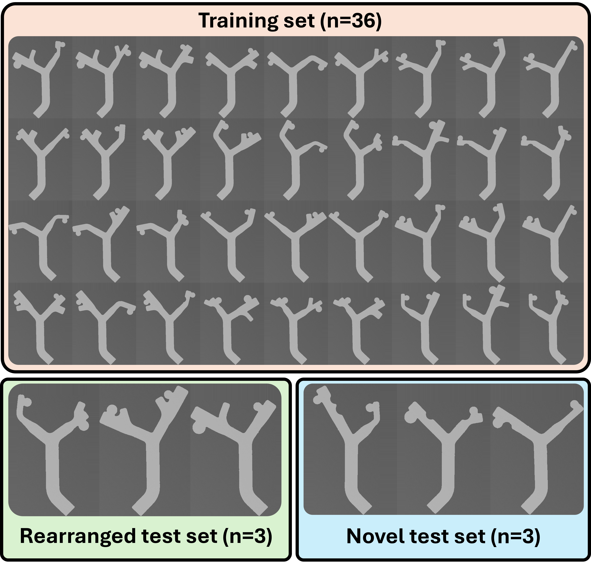

Overview
We perform a bench-top experiment investigating the feasibility of autonomous navigation of a soft fluidic robot for intracranial aneurysm treatment. As a critical step towards achieving autonomous navigation, we conduct our study using a large-scale robot. While progress towards miniaturizing soft robotic tools is being made, larger-scale prototypes are currently more mechanically robust and easier to track in camera images. Thus, they enable us to reliably collect hundreds of demonstrations to validate the autonomous navigation approach, before extending to the small-scale. In addition, we isolate our focus to a single bifurcation projected to a 2D plane. In a real case, navigation can be reduced to traversing a single bifurcation at a time, which often lies roughly in a plane after appropriate C-arm positioning. With this setup, we preserve several core difficulties of endovascular intervention: unpredictable vessel-tool forces via a soft robotic steerable guidewire attached to a flexible tube; high geometrical variation via modular 3D-printed vessel mazes; and ambiguous and incomplete visual feedback via a fluoroscopy simulator.

Since the materials used in soft robots are highly nonlinear, exhibit significant hysteresis, and are easily deformed by their environments, they are challenging to model and control [1]. Further, there are significant visual constraints in endovascular surgery. Under X-ray fluoroscopy, the vessels are not visible until a radiopaque contrast dye is injected that fills the vessels and then diffuses after a few seconds. When the dye has filled the vessels, a snapshot of the vessels called a vessel roadmap is captured. The static roadmap can be referenced while navigating the guidewire, but it is often slightly misregistered due to vessel deformation and inadvertent patient movement. Moreover, sensorization, while potentially beneficial, is still an open research challenge due to the tools' millimeter-to-sub-millimeter sizes and high flexibility [2]. Endovascular interentionists must rely on trial-and-error involving a combination of advancing, retracting, and rotating to enter the device into the correct vessel [3].
To control the soft robotic guidewire, a user inputs force commands through a teleoperated control handle. These forces are proportionally mapped to the bending and translation velocities of the robot, achieved by the syringe pump and translation drive, respectively.
To simulate an aneurysm navigation task in a 2D environment, we created 3D-printed modular bifurcated mazes. Each maze consisted of an entry, bifurcation, and two branches. The bifurcations varied in the angle of each connecting branch across the range of 25-70 degrees. Similarly, the branches varied in width, aneurysm distance from the bifurcation, which side the aneurysm branches from, and aneurysm diameter. Additional variations included secondary bends, empty branches, and bumps along the wall. Different combinations of the modular pieces led to three sets of mazes: the training set, rearranged test set, and novel test set.
 